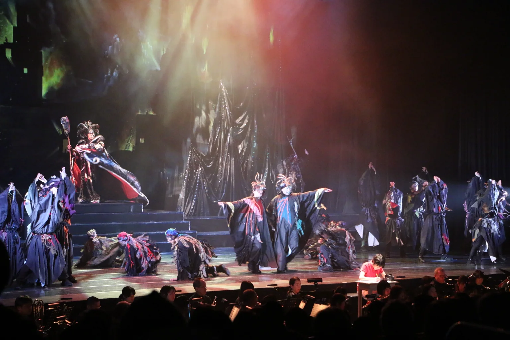

ARCHIVE / MUSICAL / 2024年度・2025年2月公演
ミュージカル『あいと地球と競売人』大田公演
20252024年度に連携して取り組み、2025年2月24日に大田市民会館で上演された大田公演。舞台・音楽・出演者が一体となった作品の様子を紹介します。※この作品の写真は、この紹介ページだけに掲載しています。
写真掲載は本作品の紹介ページ内に限定しています。IWAMI ARTS PROJECT単独主催の公演ではありません。

PARTNERSHIP / 2024年度・2025年2月
環境への願いを歌う、県民参加型ミュージカル
『あいと地球と競売人』は、12歳で亡くなった坪田愛華さんが描いた『地球の秘密』を原作とし、地球環境の大切さを歌や芝居で伝える島根発のミュージカルです。1994年の初演以来、県内外で上演を重ねてきました。
大田公演は2025年2月24日（月・祝）、大田市民会館大ホールで11:30・15:30の2公演を開催。約15年ぶりの大田公演では、川本町を拠点とする悠邑ふるさと吹奏楽団が特別出演し、生演奏とともに物語を届けました。
本事業の主催・企画制作は「あいと地球と競売人」自主企画実行委員会です。IWAMI ARTS PROJECTは2024年6月の合同ワークショップなどで協力し、地域の表現者育成と公演につながる活動に携わりました。共同ワークショップの記録を見る ↗
大田公演の当時のチラシ・公演詳細を見る ↗ ／ 作品公式サイト ↗ ／ 大田市の公演記録 ↗
※写真・舞台記録はこの作品の紹介ページ内でのみ使用しています。2024年度の事業が2025年2月に上演されたため、公演年を2025年に訂正しました。
DOCUMENTATION / PHOTO ARCHIVE
活動の記録.
画像をクリックすると拡大できます。
撮影者クレジットは確認後に追記できます。